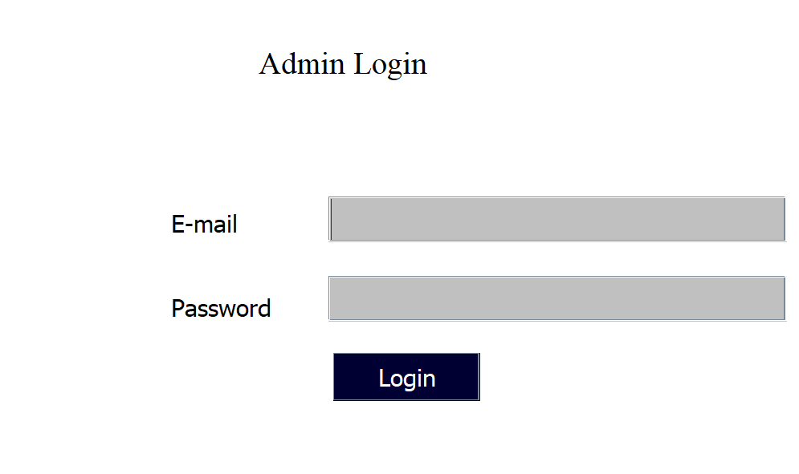
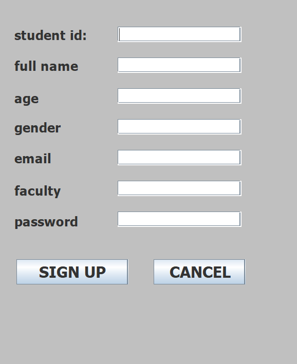
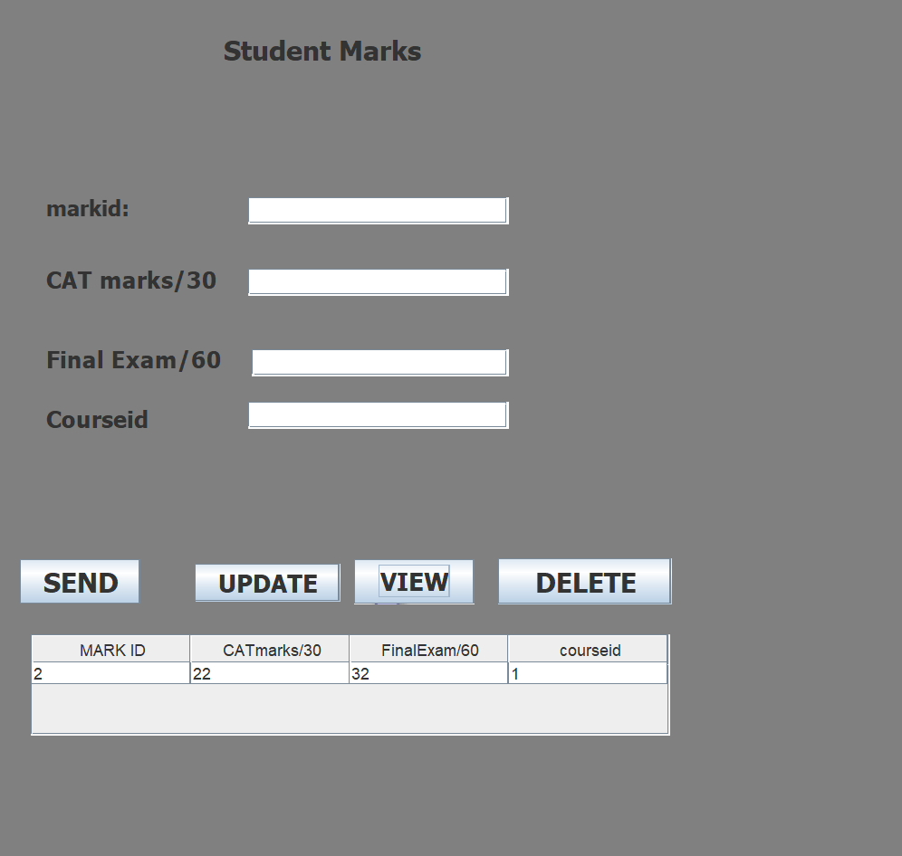
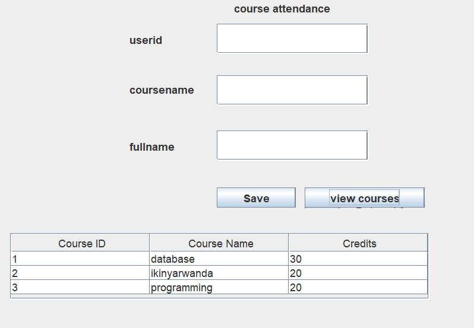

SECTION ONE : DATABASE TECHNOLOGY
STUDENT PORTAL APPLICATION
Section I
Table describution.
1.Admin:
Attributes:
Username
password
2.Attendance:
Attributes:
userid (Primary Key)
coursename
fullnames
3.Courses:
Attributes:
courseid (Primary Key)
coursename
credi
4.Grades:
Attributes:
markid (Primary Key)
catmarks (out of 30)
finalexam(out of 60)
courseid (Foreign Key referencing Courses)
5.Users:
Attributes:
userid (Primary Key)
fullname
age
email
faculty
password
These are general entities and attributes that one might find in a student portal application. The actual schema may include additional details and relationships based on specific requirements. Additionally, foreign keys represent relationships between entities. Ensure proper normalization and define relationships between tables to maintain data integrity.
LOGICAL DATA MODEL
Section II SQL
Database kamugundu_fred_s_p_a
Table structure for table admin
Column Type Null Default
username varchar(100) No
password varchar(100) No
Dumping data for table admin
Admin 1234
Table structure for table attendance
Column Type Null Default
userid int(11) Yes NULL
coursename varchar(255) Yes NULL
fullname varchar(255) Yes NULL
Dumping data for table attendance
1 computer kwizera
1 database fred
Table structure for table courses
Column Type Null Default
courseid int(12) No
coursename varchar(100) No
credits int(50) No
Dumping data for table courses
1 database 30
2 ikinyarwanda 20
3 programming 20
Table structure for table grades
Column Type Null Default
markid int(12) No
CATmarks/30 int(30) No
FinalExam/60 int(11) No
courseid int(11) No
Dumping data for table grades
2 22 32 1
Table structure for table users
Column Type Null Default
userid int(11) No
fullname varchar(50) Yes NULL
age int(12) No
gender varchar(100) No
email varchar(100) No
faculty varchar(100) No
password varchar(100) No
Dumping data for table users
1 fred 0 Fred 1234
3 gisa 2 m Gisa gjhcgfhgj 1234
Section VI
1. Create a user with your name as username and your student number as password
and grant all privileges to the created user.
Answer
CREATE USER'222013234'@'localhost'IDENTIFIED BY'222013234';
GRANT ALL PRIVILEGES ON *.*TO'222013234'@'localhost';
FLUSH PRIVILEGES;
2. Create a user with your "names_semi" as username and your student number as
password and give him insert, update, and delete privileges to the created user.
Answer
CREATE USER '222013234'@'localhost' IDENTIFIED BY '222013234';
GRANT INSERT, UPDATE, DELETE ON your_database.* TO '222013234'@'localhost';
FLUSH PRIVILEGES;
1. Revoke insert privileges to the last user you created.
ANSWER
REVOKE INSERT ON your_database.* FROM '222013234'@'localhost';
FLUSH PRIVILEGES;
SECTION TWO: JAVA PROGRAMMING
STUDENT PORTAL APPLICATION.
1.INTRODUCATION.
A Student Portal Application is a Java project designed to provide a centralized platform for managing various aspects of student-related activities within an educational institution. The application aims to streamline administrative tasks, enhance communication, and provide students with easy access to academic information. Here is a brief introduction to the key features and functionalities of the Student Portal Application:
1. User Authentication:
• The system incorporates secure user authentication to ensure that only authorized individuals, including administrators, teachers, and students, can access specific sections of the portal.
2. Admin Module:
• Administrators have access to a dedicated module for managing user accounts, courses, attendance records, and grades.
• They can add, update, or delete user accounts, assign courses, and oversee the overall functioning of the portal.
3. Student Module:
• Students can log in to view their personalized dashboards, which display information such as course schedules, attendance records, and grades.
• The portal allows students to register for courses, track their academic progress, and receive announcements from administrators.
4. Attendance Tracking:
• The system enables the tracking of student attendance for various courses. Teachers can mark attendance, and students can view their attendance records.
5. Course Management:
• The application provides functionality for managing courses, including creating new courses, updating course details, and associating students with specific courses.
6. Grade Management:
• Teachers can input and update students' grades for assignments, tests, and exams. Students can access their grades and performance summaries.
7. Communication:
• The portal facilitates communication between administrators, teachers, and students through announcements, notifications, and messaging features.
8. Database Integration:
• The application integrates with a database system (e.g., MySQL, MariaDB) to store and retrieve user information, attendance records, course details, and grades.
9. Easy Navigation:
• The user interface is designed for easy navigation, ensuring a user-friendly experience for both administrators and students.
10. Security:
• Security measures, including data encryption and secure authentication mechanisms, are implemented to protect sensitive information.
The Student Portal Application aims to enhance efficiency, transparency, and collaboration within an educational institution by providing a centralized platform for managing academic-related tasks and fostering communication between stakeholders.
2.Tools used in developing student portal application:
The tools used to develop a Student Portal Application in Java programming can vary depending on the specific requirements and preferences of the development team. However, here is a list of common tools and technologies that are often used in Java application development:
1. Integrated Development Environment (IDE):
• Eclipse: Eclipse is a popular Java IDE that provides a comprehensive development environment with features like code highlighting, debugging, and integrated tools.
2. Java Development Kit (JDK):
• Oracle JDK or OpenJDK: These are essential for Java development, providing the necessary tools, libraries, and the Java Runtime Environment (JRE).
3. Database Management System:
• MySQL or Maria DB: These are commonly used relational database management systems (RDBMS) for storing and managing the application's data.
4. Java Database Connectivity (JDBC):
• JDBC is a Java API that enables Java applications to interact with relational databases. It is used to connect Java applications to the backend database.
5. Java Server Pages (JSP) and Servlets:
• JSP and Servlets are Java technologies used for building dynamic web applications. They are often employed in creating web-based interfaces for the Student Portal Application.
6. JavaFX or Swing:
• For creating the graphical user interface (GUI) of the application, JavaFX or Swing can be used. These libraries facilitate the development of desktop applications with rich user interfaces.
7. Apache Maven or Gradle:
• Maven or Gradle can be used for project management and build automation. They help manage dependencies, build the project, and streamline the development process.
8. Version Control:
• Git: Git is a widely used version control system that allows collaborative development and helps manage source code changes efficiently.
9. Web Server:
• Apache Tomcat or Jetty: These are popular web servers that can be used to deploy and run Java web applications.
3.Forms description.
3.1. ADMIN FORM.
My project starts from admin and it have 2 columns and a admin should login so that he/she can use the password and username to login:
3.2USERS form
This page helps users to sign up in the system.
3.3. courses attendance form
It helps the student to register courses he/she will attend.
3.4. COURSES FORM
This help the admin to register course student will attend.
3.5. MARKS FORM
This form is used to add, update, view, delete with courseid as foreign key from course table.it even gives the admin access to do so, it shows the interface.
3.6. onclusion
The Student Portal Application in Java serves as a comprehensive solution for educational institutions to manage student-related information, fostering efficient administration, communication, and academic monitoring. Through its user-friendly interface, secure authentication, and integration with essential technologies, the system contributes to a streamlined educational environment, benefiting administrators, teachers, and students alike. Continuous updates and improvements can further enhance its capabilities, adapting to the evolving needs of educational institutions.
Reference:
1. mysql-connector-j-8.2.0.
2. http://localhost/phpmyadmin/index.php?
3. Lecture’s note and practical works.
4.https://www.google.com/index.html
MySQL Connectors:
MySQL provides standards-based drivers for JDBC, ODBC, and .Net enabling developers to build database applications in their language.
- Forms and Images
Admin Login Form

Users Login Form

Student Marks Form

Course Attendance Form
